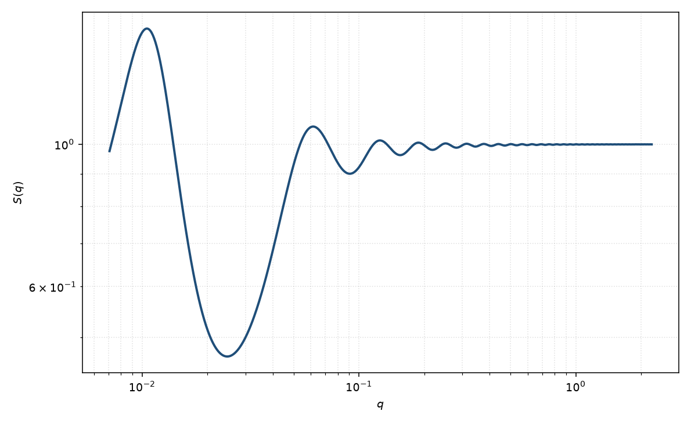

双 Yukawa 结构因子
two Yukawa
适用场景
有效势需要两段 Yukawa（通常短程吸引加长程排斥，或短程排斥肩加较长吸引）时，用双 Yukawa $S(q)$。典型对象：带电蛋白质的簇集（低 $q$ 额外峰或零角抬升）、胶束同时有空间位阻与静电、以及单 Yukawa / 纯硬球无法同时拟合相关峰与低 $q$ 的体系。
只有排斥用 Hayter；只有极短程吸引用黏性硬球。参数比单 Yukawa 多一倍，必须有浓度或盐系列。
物理图像
硬核外交互 $u(r)=K_1\mathrm{e}^{-z_1(r/\sigma-1)}/r+K_2\mathrm{e}^{-z_2(r/\sigma-1)}/r$。MSA 下 Ornstein–Zernike 仍有解析途径（Høye–Blum；Liu、Chen 与 Chen 给出便于计算 $S(q)$ 的求根实现）。短吸长斥时，$S(q)$ 可在普通相关峰之外再出现低 $q$ 簇峰或 $S(0)$ 抬升，对应于平衡簇。
两套 $(K_i,z_i)$ 与 $\eta$ 强烈耦合。符号相反的两段才能同时产生“低 $q$ 结构 + 中 $q$ 相关峰”；两段同号则只是改写单 Yukawa 的有效电荷与筛选。
示意图

核心公式
出发点
OZ 与结构因子
$$h(r)=c(r)+n\int c(|\mathbf{r}-\mathbf{r}'|)\,h(r')\,\mathrm{d}^3r',\qquad S(q)=\bigl[1-n\hat{c}(q)\bigr]^{-1}.$$硬核外交互为两段 Yukawa。令 $x=r/\sigma$，接触强度 $K_i$ 与无量纲筛选 $z_i$ 可正可负：
$$\beta u(x)=\frac{K_1}{x}\,\mathrm{e}^{-z_1(x-1)}+\frac{K_2}{x}\,\mathrm{e}^{-z_2(x-1)}\quad(x\gt 1),\qquad u=\infty\ (x\lt 1).$$闭包为平均球近似（MSA）：核内 $h=-1$，核外 $c(r)=-\beta u(r)$。单段排斥 Yukawa（$K_2=0$、$K_1>0$）回到 Hayter–MSA。
推导
Høye–Blum 给出多 Yukawa 的 MSA 解析途径：核内 $c(x)$ 是硬球多项式加上两套 $\sinh(z_i x)/x$、$\bigl(\cosh(z_i x)-1\bigr)/x$ 项，待定系数由接触衔接与 OZ 约束的非线性方程组决定。Liu、Chen 与 Chen 把它化成便于求根的实现。核外两段尾的傅里叶变换与 Hayter 同型。令 $A=q\sigma$，第 $i$ 段
$$n\hat{c}_i(q)=-24\eta K_i\,\frac{z_i\sin A+A\cos A}{A(A^2+z_i^2)}.$$完整 $n\hat{c}$ 还含核内项。结构因子
$$S(q)=\bigl[1-n\hat{c}_{\mathrm{core}}(q)-n\hat{c}_1(q)-n\hat{c}_2(q)\bigr]^{-1}.$$$K_1=K_2=0$ 回到 PY 硬球。$z_1\gg z_2$ 且 $K_1$ 与 $K_2$ 异号时，短程与长程竞争，低 $q$ 可出现簇峰或抬升。
低 $q$ 与渐近
$A\to 0$ 时 $n\hat{c}_i(0)=-24\eta K_i(1+z_i)/z_i^2$。RPA 叠加硬球压缩率给出
$$S(0)^{-1}\approx\frac{(1+2\eta)^2}{(1-\eta)^4}+24\eta\sum_{i=1}^{2}K_i\,\frac{1+z_i}{z_i^2}.$$$K_i>0$（排斥）降低 $S(0)$；$K_i<0$（吸引）升高 $S(0)$。短程吸引（$z$ 大、$K<0$）加长程排斥（$z$ 小、$K>0$）时，中 $q$ 相关峰仍在 $q\sigma\sim 2\pi$，而 $S(0)$ 可由吸引主导而抬升，对应平衡簇。两段同号则只是改写单 Yukawa 的有效接触势与筛选。$q\sigma\gg 1$ 时 $S(q)\to 1$。
参数表
| 参数 | 符号 | 含义 | 单位 | 典型范围 |
|---|---|---|---|---|
| 硬球半径 | $R$ | 硬核半径，$\sigma=2R$ | Å | 与 $P(q)$ 半径可比 |
| 体积分数 | $\eta$ | 硬球体积分数 | 无量纲 | 由浓度约束 |
| 强度 1 / 2 | $K_1,K_2$ | 两段 Yukawa 的接触强度（含符号） | 无量纲 | 异号才能同时吸/斥 |
| 衰减 1 / 2 | $z_1,z_2$ | 以 $\sigma$ 度量的筛选，$z$ 大则更短程 | 无量纲 | $z\sim 1$–$20$ |
| 标度 / 本底 | $\mathrm{scale}$, $B$ | $I=P\,S+B$ 的前置与本底 | 与强度单位一致 | 实验相关 |
拟合注意
可辨识性：$S(q)$ 的半径（或直径）与形式因子半径、体积分数与标度在同时自由拟合时高度退化。先在稀溶液固定 $P(q)$，再用浓度系列的低 $q$ 变化约束 $S(q)$；不要把 $P(q)$ 与 $S(q)$ 的全部参数一起放开。 五六个势参数极易过拟合。先用 Hayter 或硬球看相关峰能否单独说明，再只在低 $q$ 残差明确时打开第二段 Yukawa。盐或 pH 系列应主要改变长程段。
取向对球无关。多分散使簇峰与相关峰都变钝。磁性通道共用核 $S(q)$。
相近模型
- Hayter–MSA 结构因子 — 只有一段排斥 Yukawa。
- 硬球结构因子 — 两段强度都趋于零。
- 黏性硬球结构因子 — 零程吸引，没有长程排斥尾。
- 方阱结构因子 — 方阱吸引，不是指数尾。
参考文献
- Liu, Y.; Chen, W.-R.; Chen, S.-H. Cluster formation in two-Yukawa fluids. J. Chem. Phys. 2005, 122, 044507. DOI: 10.1063/1.1830433
- Chen, S.-H.; Broccio, M.; Liu, Y.; Fratini, E.; Baglioni, P. The two-Yukawa model and its applications: the cases of charged proteins and copolymer micellar solutions. J. Appl. Cryst. 2007, 40, s321–s326. DOI: 10.1107/S0021889807006723
- Hayter, J. B.; Penfold, J. An analytic structure factor for macroion solutions. Mol. Phys. 1981, 42, 109–118. DOI: 10.1080/00268978100100091